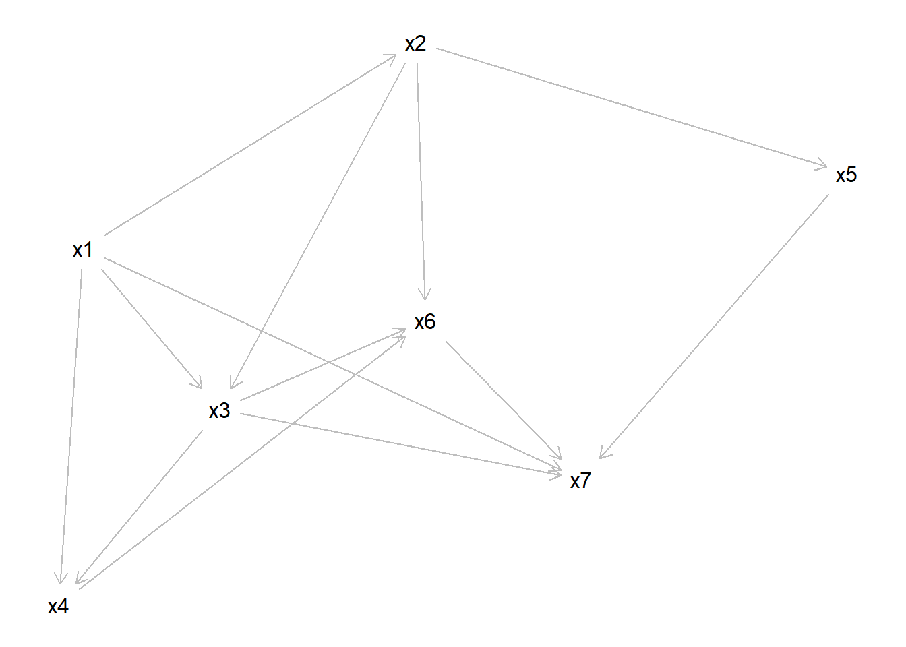
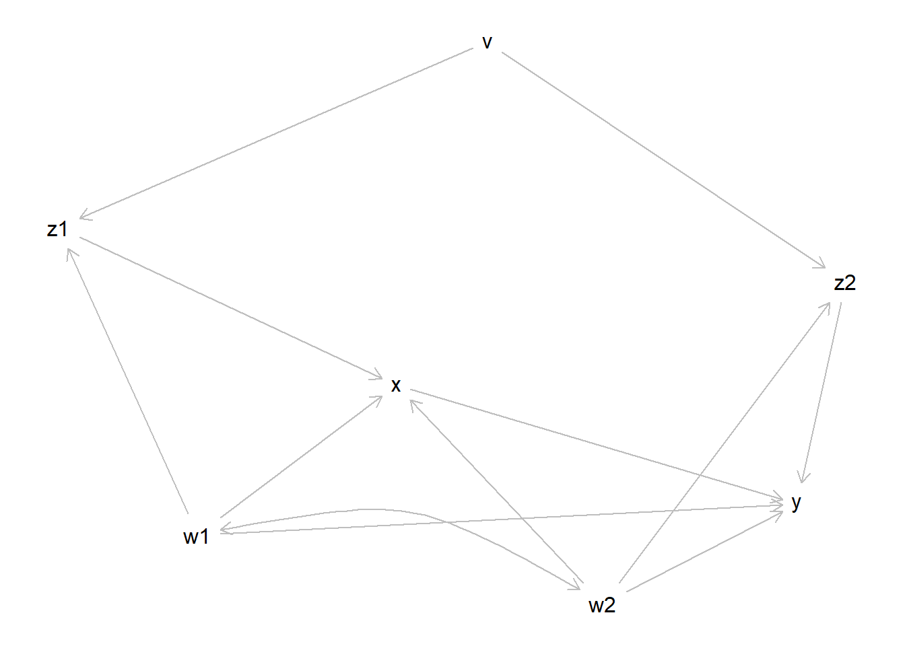
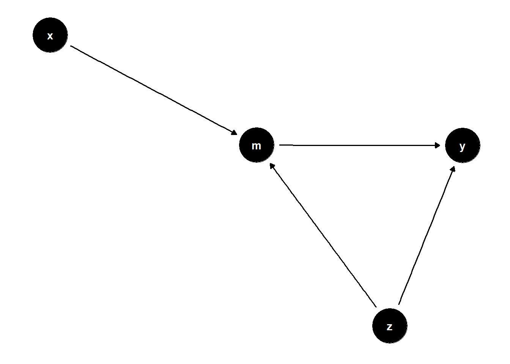
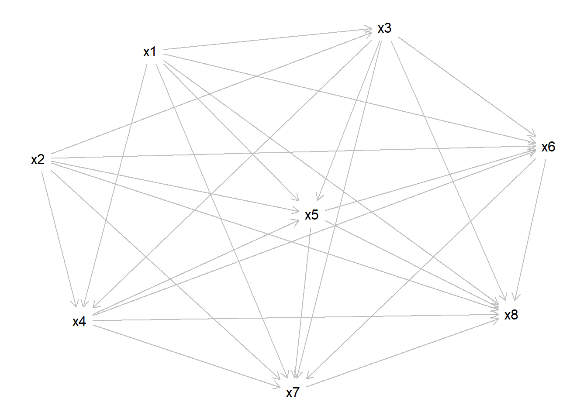

2 Theorie zu DAGs
2.1 Die vier Atome der Kausalanalyse
Aufgabe: Von x zu y, also die Wirkung von X auf Y
2.1.1 Die Konfundierung
Gabel, von einem Punkt gehen 2 Pfeile aus
üö∂<‚Äî‚Äî‚Äî- üï≥ ‚Äî‚Äî‚Äî‚Äì> üèÅ
x <———- z ———–> y
üåâ Vorstellung: Wir haben einen Pfad, der bei X startet und √ºber z zu y f√ºhrt. Man stelle sich vor, an der Stelle von z sei ein Loch, durch das Kontrollieren bauen wir eine Br√ºcke bzw. schlie√üen das Loch.
–> Damit schließt sich der Pfad
2.1.2 Die Kollision
2 Pfeile treffen an einem Punkt aufeinander
üö∂‚Äî‚Äî‚Äî->üí£<‚Äî‚Äî‚Äî‚Äìüö´
x———-> m <———– y
üåãVorstellung: Wir haben einen Pfad, der bei X startet und √ºber m zu y f√ºhrt. Man stelle sich vor, an der Stelle von m explodiert die Stra√üe (= Kollision), was tun wir jetzt? Wenn wir versuchen die Stra√üe zu reparieren, also zu kontrollieren, explodiert m immer wieder, wir k√∂nnen uns vorstellen, dass z.B. ein Vulkan an der Stelle immer wieder ausbricht.
–> Hier dürfen wir auf keinen Fall kontrollieren, in diesem Fall lassen wir alles so, wie es ist.
2.2 Beispielaufgabe

Gegeben sei der DAG g (s. u.). Der DAG verfügt über r dag_size Variablen, die als Knoten im Graph dargestellt sind (mit \(x_1, x_2, \ldots x_n\) bezeichnet) und über Kanten verbunden sind.
Welche minimale Variablenmenge muss kontrolliert werden, um den kausalen Effekt von der UV zur AV zu identifizieren?
UV: x4.
AV: x5.
Hinweise:
- Mengen sind mittels geschweifter Klammern gekennzeichnet, z.B.
{x8, x9}meint die Menge mit den zwei Elementenx8undx9. - Die leere Menge
{ }bedeutet, dass keine Variable kontrolliert werden muss, um den kausalen Effekt zu identifizieren. - Alle Variablen werden als gemessen vorausgesetzt.
- Es ist möglich, dass es keine Lösung gibt, dass es also keine Adjustierungsmenge gibt, um den kausalen Effekt zu identifizieren. Wenn dies der Fall sein sollte, wählen Sie “keine Lösung”.
- Es ist möglich, dass einzelne Variablen keine Kanten besitzen, also keine Verbindung zu anderen Variablen (Knoten) haben.
Vorgehen:
- UV & AV identifizieren
UV ist bei diesem DAG x4 und die AV ist x5
- Direkte kausale Pfade suchen
In diesem DAG gibt es keine direkten kausalen Pfade, also keine Pfeile, die direkt von x4 zu x5 führen, bei denen die Pfeilrichtung korrekt ist und es über keine weiteren Variablen geht.
- Mögliche Hinterpfade suchen
Dieser DAG hat viele Hinterpfade, also Pfade, die von der UV über weitere Variablen zur AV führen.
Ein Beispiel wäre der Pfad von x4 über x3, x1, x2 zu x5. Natürlich gibt es noch viel mehr Möglichkeiten.
- Welche Pfade soll man schließen (= Konfundierung), welche soll man lassen (= Kollision)?
Wichtig ist es hierbei jeden Pfad einzeln für sich zu betrachten und nur bei dem zu betrachtenden Pfad auf die Pfeilrichtungen zu schauen.
Betrachtet man nun die Variable x7, dann sieht man, dass egal welchen Pfad man geht, bei x7 immer eine Kollision entsteht. Also kann man alle Pfade, die über x7 führen ausschließen und es darf nicht kontrolliert werden. x6 ist damit auch ein Collider, da der einzige Pfad, der keine Kollision bei x6 hat über x7 führt, damit ist auch diese Variable ausgeschlossen.
Suchen wir jetzt nach Confundern: Je nach Pfad, den man wählt kann jede andere Variable, also x1, x2 und x3 (denn UV und AV darf man nie kontrollieren), ein Confunder sein.
Schauen wir uns ein Beispiel an: x4 <- x1 -> x2 -> x5 Bei diesem Pfad wäre x1 der Confunder.
Alle Pfade mit Kollisionen sind hier rot gekennzeichnet, alle mit Confundern grün.
- Die kleinste Menge finden
Wie finden wir jetzt die minimale Menge an Variablen, die wir kontrollieren müssen, um alle Hintertürpfade zu schließen?
Das Gute ist, dass sobald man einen Confunder auf einem Pfad hat, es total egal ist, welche “Zwischen”-Variable man kontrolliert.
Hier anhand eines Beispiels: x4 <- x1 -> x2 -> x5 Bei diesem Pfad wäre x1 zwar der Confunder, aber wir können stattdessen auch x2 kontrollieren, da es für den Pfad und das Ergebnis egal ist, ob wir x1 oder x2 kontrollieren.
Genauso egal ist es, welchen Confunder man kontrolliert, wenn man mehrere Confunder auf einem Pfad hat, es reicht immer, nur einen zu kontrollieren.
Schauen wir jetzt, über welche “Zwischen”-Variable alle Confunder-Pfade laufen müssen: in diesem Fall wäre das x2, also reicht es nur diese Variable zu kontrollieren, um alle Hintertürpfade zu schließen und den Effekt der UV auf die AV zu identifizieren.
2.3 kausal03
Gegeben sei der DAG g (s.u.). Was ist die minimale Menge an Variablen, die man kontrollieren muss, um den kausalen Effekt von x auf y zu identifizieren?

Hinweise:
- Gebogene Kurven mit doppelter Pfeilspitze zeigen keine Kausaleinflüsse ein (was in DAGs nicht erlaubt wäre).
- Stattdessen zeigen Sie eine Assoziation bedingt durch eine (nicht aufgeführte) Konfundierungsvariable an.
2.4 Answerlist
- { w1, w2, z2 }
- { w2, z2 }
- { w1, w2 }
- { w1, z2 }
- { w1 }
Wir haben einen direkten kausalen Pfad zwischen x und y Ignorieren wir erstmal die gebogenen Pfeile und schauen uns dann zu allererst die Pfade an, die nur über eine Zwischenvariable führen. Hier sehen wir, dass es nur 2 Möglichkeiten gibt, einmal über w1 und über w2, beides sind Confunder, also müssen wir beide auf jeden Fall kontrollieren.
Wir haben 2 Collider Pfade, einmal von x über w1, z1, v, z2 zu y und von x über z1, v, z2, w2 zu y (würden wir die beiden Pfade zu einem großen kombinieren hätten wir theoretisch sogar noch einen Collider-Pfad). Diese Pfade können wir also von unseren Überlegungen ausschließen.
Suchen wir jetzt noch nach Confunder-Pfaden, die nicht über w1 oder w2 führen. Es bleibt nur ein Pfad übrig (von x über z1, v, z2 zu y). Der Confunder wäre hier v, jedoch gibt es diese Antwortmöglichkeit nicht. Wie jedoch vorher erklärt, ist es egal welche Zwischenvariable wir auf einem Confunder-Pfaf kontrollieren, hauptsachen wir kontrollieren eine. Für diesen Pfad ist es also egal, ob wir z1, v oder z2 kontrollieren.
Die Lösung wäre also: { w1, w2, z2 }
Genauso richtig wäre aber auch: { w1, w2, z1 } { w1, w2, v }
2.5 kausal29
Gegeben sei der DAG (Graph) g (s. u.). Der DAG verfügt über mehrere Variablen, die als Knoten im Graph dargestellt sind.
f <-
dagify(
y ~ z + m,
m ~ x + z,
exposure = "x",
outcome = "y"
)Hier ist die Definition des DAGs:
cat(f)dag {
m
x [exposure]
y [outcome]
z
m -> y
x -> m
z -> m
z -> y
}Und so sieht er aus:
ggdag(f) + theme_dag_blank()
Welche minimale Variablenmenge muss kontrolliert werden, um den kausalen Effekt von der UV zur AV zu identifizieren?
UV: x
AV: y
Hinweise:
- Mengen sind mittels geschweifter Klammern gekennzeichnet, z.B.
{x8, x9}meint die Menge mit den zwei Elementenx8undx9. - Die leere Menge
{ }bedeutet, dass keine Variable kontrolliert werden muss, um den kausalen Effekt zu identifizieren. - Alle Variablen werden als gemessen vorausgesetzt.
- Es ist möglich, dass es keine Lösung gibt, dass es also keine Adjustierungsmenge gibt, um den kausalen Effekt zu identifizieren. Wenn dies der Fall sein sollte, wählen Sie “keine Lösung”.
2.6 Answerlist
- {m}
- {z}
- {m, z}
- { }
- keine Lösung
Man sieht direkt, dass man immer über m gehen muss, um zu y zu gelangen. Betrachtet man den Pfad von x über m zu y, dann sieht man, dass m hier ein Mediator ist, diese muss man nicht kontrollieren. Der zweite mögliche Pfad führt über m und z, jedoch liegt hier bei m ein Collider vor, deswegen dürfen wir in dem Fall weder m noch z kontrollieren.
Die Lösung ist also: { }, da wir keine Variable kontrollieren müssen, um den Effekt von x auf y zu identifizieren.
2.7 kausal28

Gegeben sei der DAG g (s. u.). Der DAG verfügt über mehrere Variablen, die als Knoten im Graph dargestellt sind und mit \(x_1, x_2, \ldots x_n\) bezeichnet sind.
Welche minimale Variablenmenge muss kontrolliert werden, um den kausalen Effekt von der UV zur AV zu identifizieren?
UV: x7.
AV: x8.
Hinweise:
- Mengen sind mittels geschweifter Klammern gekennzeichnet, z.B.
{x8, x9}meint die Menge mit den zwei Elementenx8undx9. - Die leere Menge
{ }bedeutet, dass keine Variable kontrolliert werden muss, um den kausalen Effekt zu identifizieren. - Alle Variablen werden als gemessen vorausgesetzt.
- Es ist möglich, dass es keine Lösung gibt, dass es also keine Adjustierungsmenge gibt, um den kausalen Effekt zu identifizieren. Wenn dies der Fall sein sollte, wählen Sie “keine Lösung”.
2.8 Answerlist
- { x1 , x2 , x3 , x4 , x5 , x6 }
- { x3, x4 }
- { x8 }
- { x6, x7 }
- { x2, x5 }
Der DAG wirkt auf den ersten Blick sehr überfordernd, aber ist gar nicht schwer zu lösen. Es gibt einen direkten kausalen Pfad von x7 auf x8. Schaut man sich den DAG jetzt genauer an, dann sieht man dass es für jede Zwischenvariable einen einzelnen Pfad gibt, heißt z.B. es gibt einen einzelnen Pfad der nur über x5 oder nur über x3 führt. Alle diese Variablen sinf für diese Pfade auch Confunder, also müssen wir alle Zwischenvariablen kontrollieren.
Die Lösung ist also: { x1 , x2 , x3 , x4 , x5 , x6 }